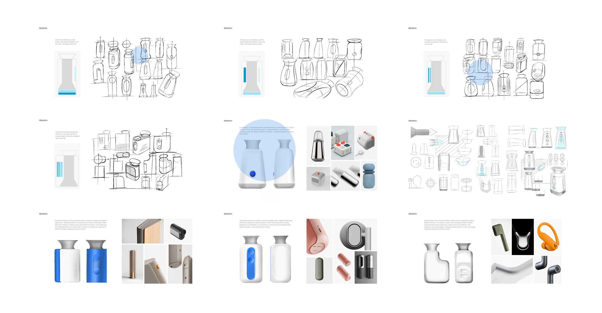
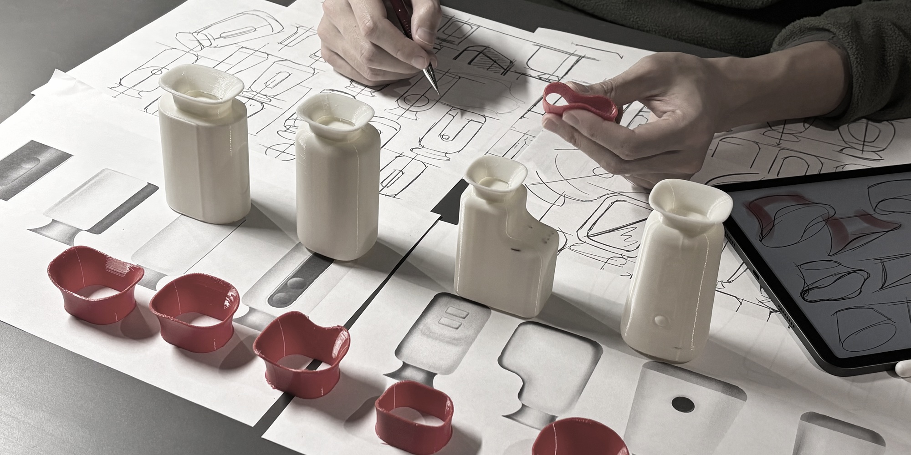
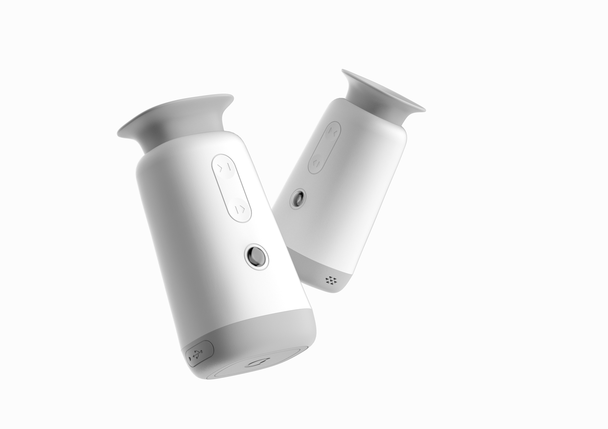
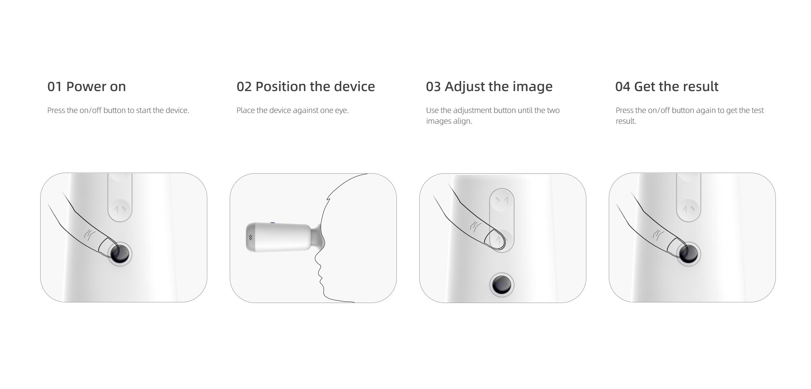
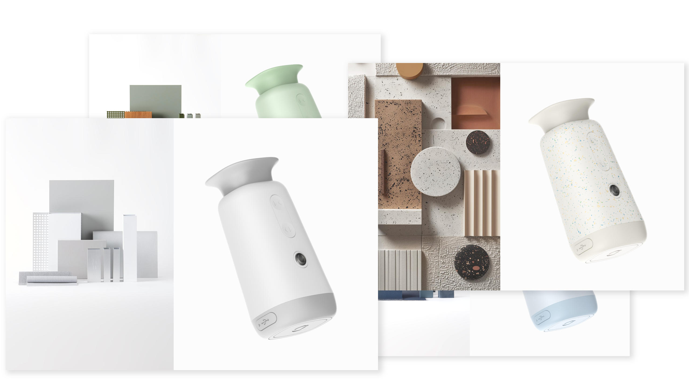
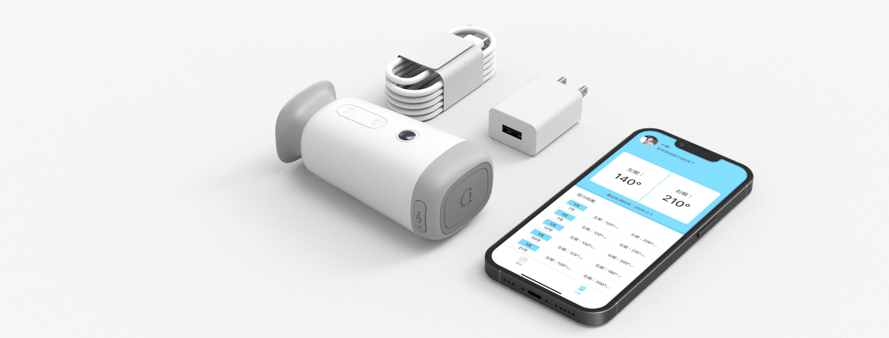

Work · Commercial
“Hutongtong”
Portable Eye Test Device
A portable home eye-test device for better protection of children's vision —
providing timely vision tests and eye-care advice anywhere.
HMW
How might we make eye testing more accessible for children, so they can take the test regularly?
Optometry machines are large because of the way they work, and are usually only available at opticians or hospitals. Our technical team designed a new testing method that converts the conventional longitudinal motion into a horizontal one — making a much smaller device possible.

User research
Our target users are children aged 7–10. The device should feel warm and friendly rather than intimidating, even though it is a medical instrument.
The design is modern and minimalistic — professional enough to reassure parents, yet approachable enough to sit comfortably in a cozy family home, like a smart, contemporary device that blends seamlessly into the living space.

Sketch & Prototype


The product



